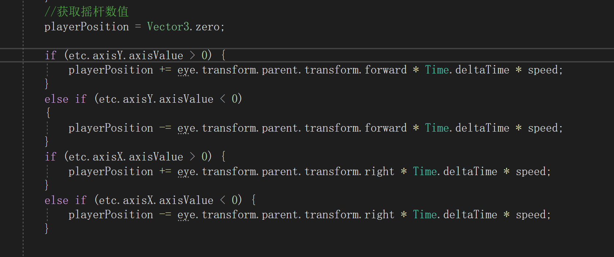
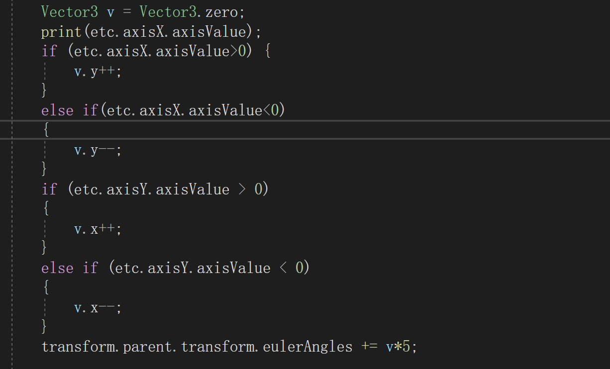
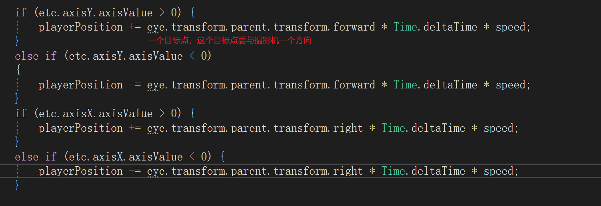
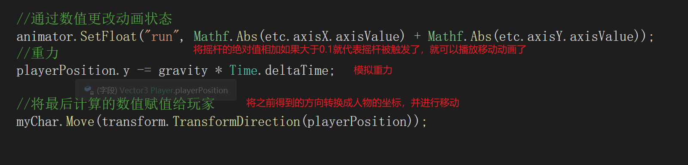
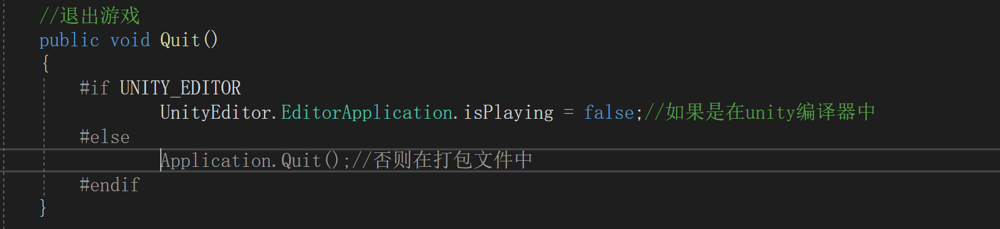
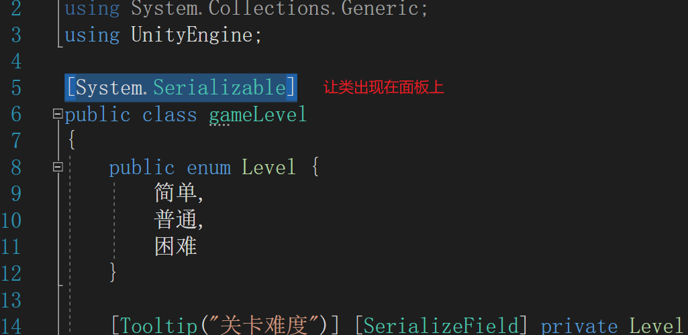
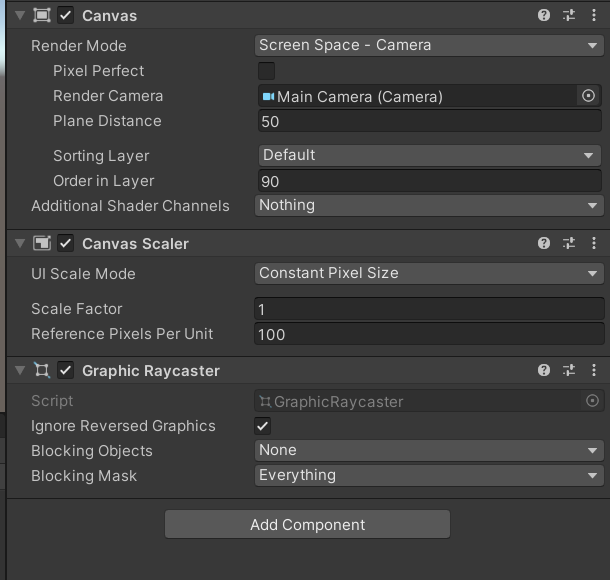
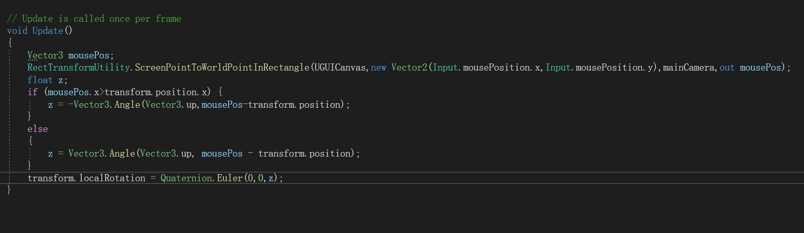
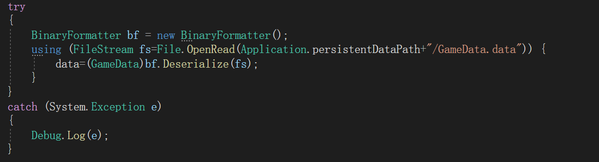

EasyTouch在使用时有自带的旋转或是移动方法，这些方法只能在简单的人物移动中使用，如果场景比较复杂，存在很多碰撞体体积很小的物体，而且人物移动很快时，就会出现人物穿墙等不好的效果，而且EasyTouch插件使用的监测方式是Update，在帧率很低的电脑上会出现缓慢的情况
为了解决上面出现的问题我们可以写一份自己的旋转或是移动方法，EasyTouch的旋转使用的是触控板，移动使用摇杆，摇杆和触控板基本一样，只需要调用其方法内的axisX.axisValue或axisY.axisValue就能获取到对应的x或是y的值，摇杆以组件的正中心为(0,0)点。而触控板则是以鼠标或手指落点为正中心(0,0)点
通过获取摇杆得到自己的移动方法
通过获取触控板得到自己的旋转方法
在做第三人称游戏时，人物模型的移动想要像崩坏3那样，按摄影机方向为准，而不是模型方向则需要一个转换，首先是一个对象，这个对象要与摄影机一个方向，而且这个对象不能是摄影机，因为摄影机需要旋转会影响x轴造成方向上的错误。
这里我使用的是eye作为我的方向基准。这一步还只是得到了一个方向，并不是移动的坐标。还需要进行下一步的转换。
这里采用的是TransformDirection方法，他可以将一个方向转换成当前对象的一个坐标。
转换成坐标后再通过人物控制器的Move方法进行移动。
退出游戏功能实现
正常情况下需要一个类继承了MonoBehaviour类才能被挂载到Unity对象上
如果一个类被打上这个标记那么这个类虽然不能被挂载但能出现在面板上（需要其它类创建了它的对象）
适用于Scene Space-Camera模式下的画布
这种模式下画布处于世界坐标
而鼠标处于屏幕空间坐标
当画布上的一个游戏物体想要朝向鼠标位置时就可以使用
RectTransformUtility.ScreenPointToWorldPointInRectangle(画布,屏幕空间坐标,当前使用的摄影机,out 返回转换后的结果);
这样就能把一个屏幕空间坐标转换为一个画布上的坐标
当坐标转换完成后还要计算两个坐标的夹角
Vector3.Angle(当前前方,目标方向)
这个方法可以计算出两个向量间的夹角
最后通过Quaternion.Euler(x,y,z)方法就可以计算出最后旋转的坐标
完整代码
数据持久化需要用到流，而且被持久化的方法不需要继承MonoBehaviour类。但需要在类上加上[System.Serializable]属性。
这里的处理流时使用了using(流){处理方法}。这样子写可以不用释放资源，如果不同using处理这需要在末尾释放流资源。
持久化之前需要创建好一个文件流用于存储持久化数据，同时也需要创建一个持久化类BinaryFormatter类。
最后要将将用于持久化的数据流和类传给BinaryFormatter.Serialize(流,类)。
反序列化也一样，需要通过BinaryFormatter类来处理，同样也需要流，通过流读取存储的序列化数据。
通过将流传给BinaryFormatter.Deserialize(流);进行处理，最后还要将处理后的结果通过强转的方式转换为原来的类型。
这个比较简单直接通过Screen.width和Screen.height获取就行
通过Application.platform来判断。RuntimePlatform是个枚举类型
这里在menuName后面填上名称后就能通过鼠标右键在文件夹中创建一个对应的配置文件。配置文件结构和类一致。